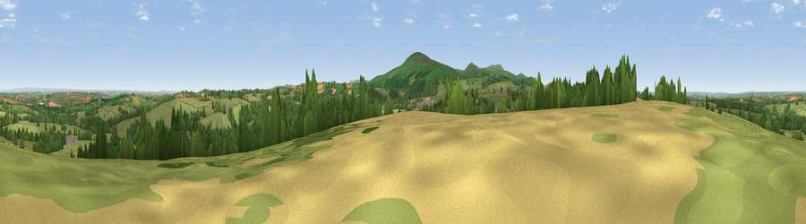

Viewpoint near South Tawton
#12805 in England · top 18% of its area beats it · near South TawtonThe view, rendered

A 360° render of this exact spot computed from the terrain model, tree cover and land cover — summer colours, afternoon light, calibrated against photographs of famous viewpoints. Real trees, hedges and buildings will differ in detail.
The panorama
Grey silhouette: terrain skyline in each direction (720 bearings, Earth curvature and refraction included). Dashed green: skyline with trees (+15 m) and buildings (+8 m) as obstacles. Blue strip: how far the ground is visible on each bearing.
Where the view opens
Wedge length = distance to the farthest visible ground on that bearing (vegetation-aware). Rings at 10, 25 and 50 km.
What fills the view
68% grassland · 21% woodland · 10% cropland ·
Angular shares of the visible panorama (visual magnitude), not map area. Landscape diversity 0.37 (0–1 Shannon).
Key numbers
More beautiful places nearby
The staircase of upgrades: each row has a higher view potential than everything closer. Driving times are estimates from straight-line distance, calibrated against real road routing — check an actual route before setting out.
| Place | Direction | Drive | Score |
|---|---|---|---|
| Viewpoint near Sticklepath | WSW · 2 km | ~5 min | 63.8 |
| Viewpoint near Sticklepath | S · 4 km | ~9 min | 73.5 |
| Viewpoint near South Zeal | S · 5 km | ~11 min | 75.0 |
| Yes Tor | SW · 9 km | ~18 min | 78.5 |
| Viewpoint near North Bovey | SSE · 17 km | ~30 min | 79.3 |
| Cairn | SE · 22 km | ~36 min | 79.8 |
| Viewpoint near Haytor Vale | SE · 23 km | ~37 min | 80.1 |
| Viewpoint near Buckland in the Moor | SSE · 25 km | ~41 min | 80.7 |
50.75602, -3.92484 · source: screening · position refined by local search. Computed location — check access rights before visiting.